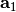
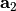
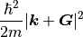

Projector Augmented Wave Density Functional Theory¶
Let us motivate our discussion of the specifics of projector augmented wave density functional theory (PAW-DFT):cite:blochl1994_paw,kresse1999_paw, by revisiting the implication of crystalline arrangements of atoms on the electron density. Suppose we have the real space lattice vectors: , , and  , which produces the Bravais lattice , where .
, which produces the Bravais lattice , where .
Due to periodicity, all functions dependent upon the Bravais lattice must have a periodic representation. This includes the electronic density in an atomic crystal which can be written as a periodic function
And it is useful to represent it as a Fourier series expansion, an expansion in sines and cosines.
Since the function is periodic, then for any choice of 
Then the reciprocal lattice vectors are defined
Bloch’s Theorem¶
The electron wavefunctions of a crystal have a basis consisting entirely of Bloch wave energy eigenstates.
The energy eigenstates for an electron in a crystal can be written as Bloch waves.
A wavefunction  is a Bloch wave if it has the form:
is a Bloch wave if it has the form:
Energy Cutoff¶
For a DFT calculation with plane waves, the electronic wavefunction is represented as the infinite summation of plane waves, which mus be truncated to a finite series.
With more plane waves, there is more accuracy, but also at higher computational cost.
Plane waves with less kinetic energy

have a higher contribution to the sum, so the plane waves with lower energy have the highest contribution.
the deermination of the energy cutoff. Detemining of the energy cutoff for the plane wave basis set expansion has a large effect on the cost of calculation as well as the accuracy of calculation. If is the energy cutoff, then plane waves with kinetic energy less than are excluded from the basis set.
where
Additional Reading¶
`The Projector Augmented-wave method <https://arxiv.org/pdf/0910.1921v2.pdf>_ by Carsten Rostgaard